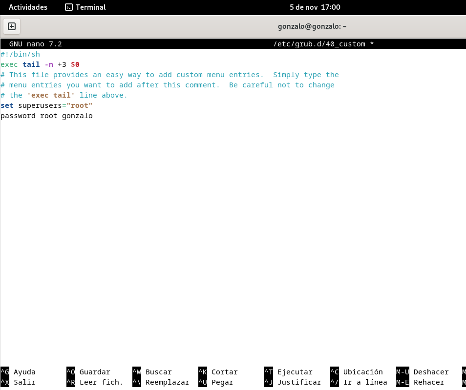
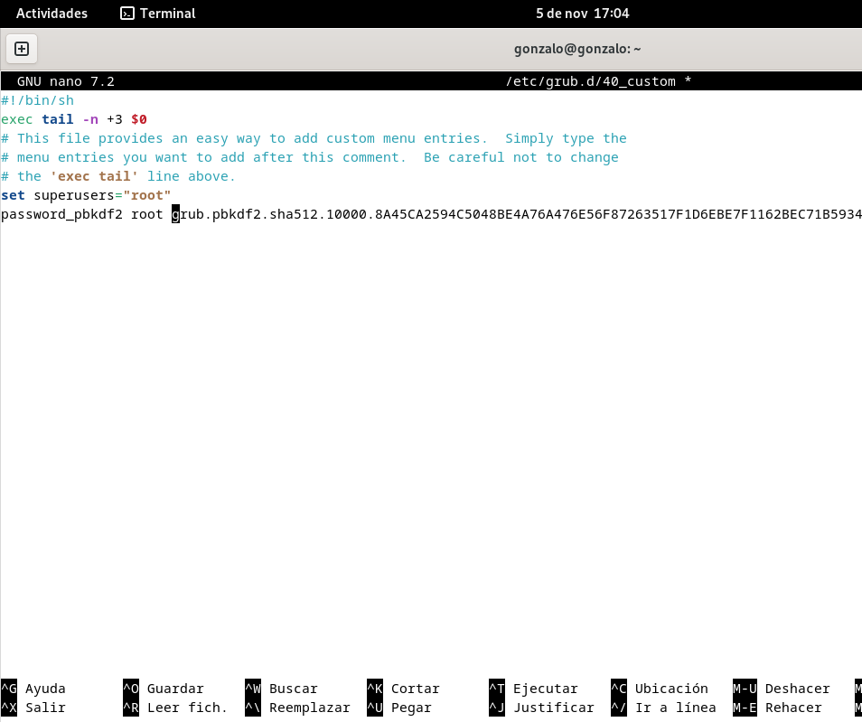
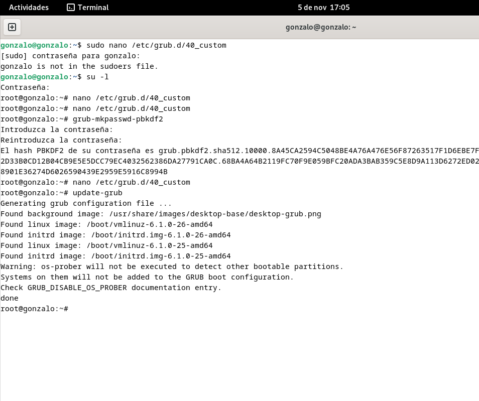
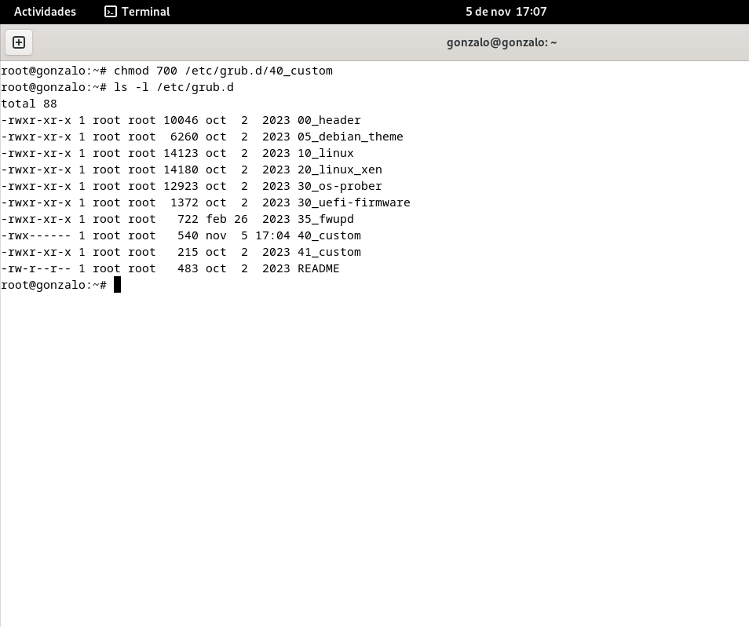
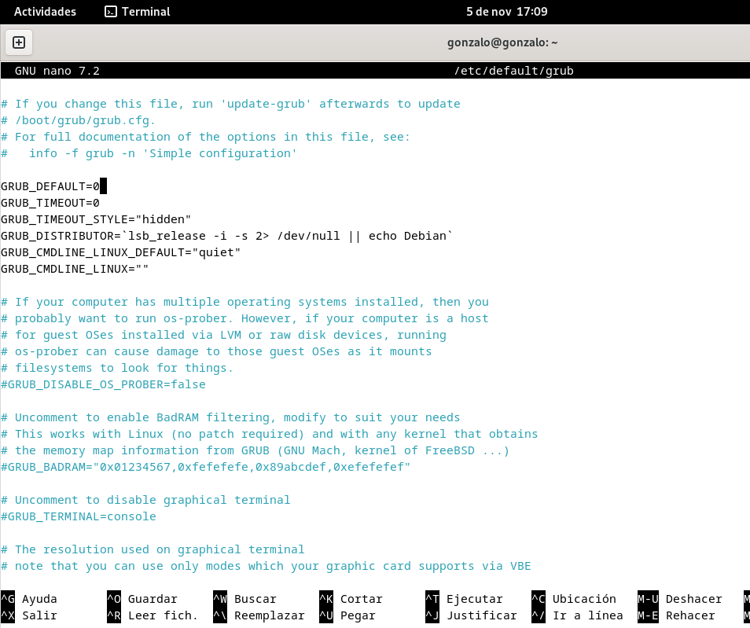

Configuraremos una contraseña para restringir el acceso a las opciones avanzadas de GRUB y evitar que usuarios no autorizados cambien los parámetros de arranque.
Primero abrimos el archivo 40_custom para añadir la configuracion de contraseña.
sudo nano /etc/grub.d/40_custom
Añadiremos en este archivo las siguientes lineas para establecer el usuario y la contraseña de GRUB.
set superusers="root"
password root CONTRASEÑA
Y sustituiremos CONTRASEÑA por la clave segura que queramos.

Despues de editar el archivo 40_custom, pasaremos a cifrar la contraseña. Generamos el hash en la terminal con el siguiente comando.
sudo grub-mkpasswd-pbkdf2
GRUB generará un hash, el cual, copiaremos.
Volvemos a abrir el archivo 40_custom para sustituir la linea pasword root CONTRASEÑA por la siguiente.
password_pbkdf2 root <HASH_GENERADO>
Sustituiremos HASH_GENERADO por el hash que copiamos anteriormente.

Por ultimo, ejecutamos el siguiente comando para generar el archivo de configuración de GRUB y aplicar los cambios.
sudo update-grub

En este paso, vamos a asegurar el archivo de configuracion, cambiando sus permisos para que solo el usuario root tenga acceso. Para ello, ejecutamos el siguiente comando.
sudo chmod 700 /etc/grub.d/40_custom

Esto limitará el acceso a este archivo únicamente al usuario root, impidiendo que otros usuarios lo modifiquen.
Para evitar que el menú de GRUB 2 sea visible durante el arranque y reducir el riesgo de acceso no autorizado, podemos reducir el tiempo de visualización a cero segundos.
Para ello, abrimos el archivo de cconfiguracion de GRUB con el siguiente comando.
sudo nano /etc/default/grub
Configuramos el tiempo de espera del menu de GRUB escribiendo lo siguiente.
GRUB_TIMEOUT=0

Por ultimo, guardamos el archivo de configuracion de grub con el siguiente comando.
sudo update-grub